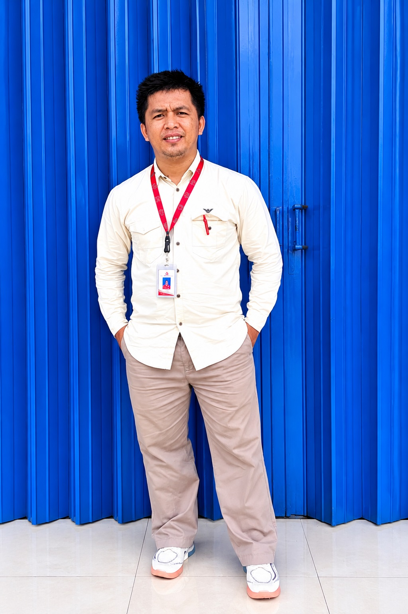
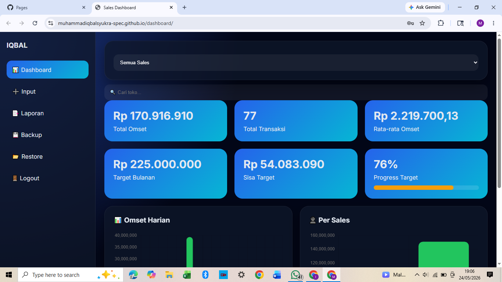
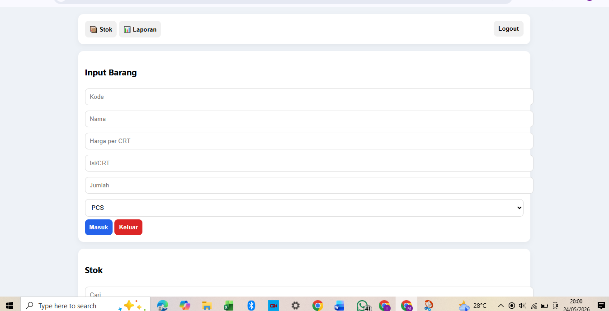
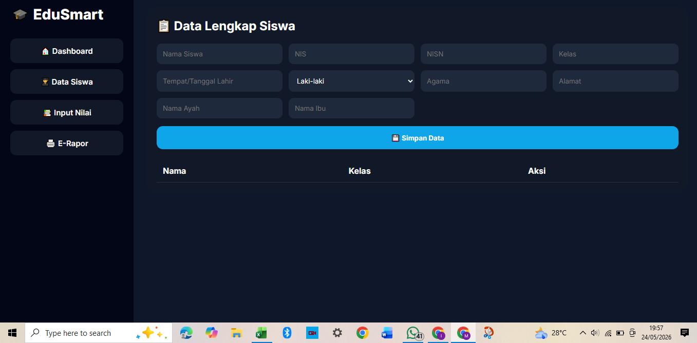
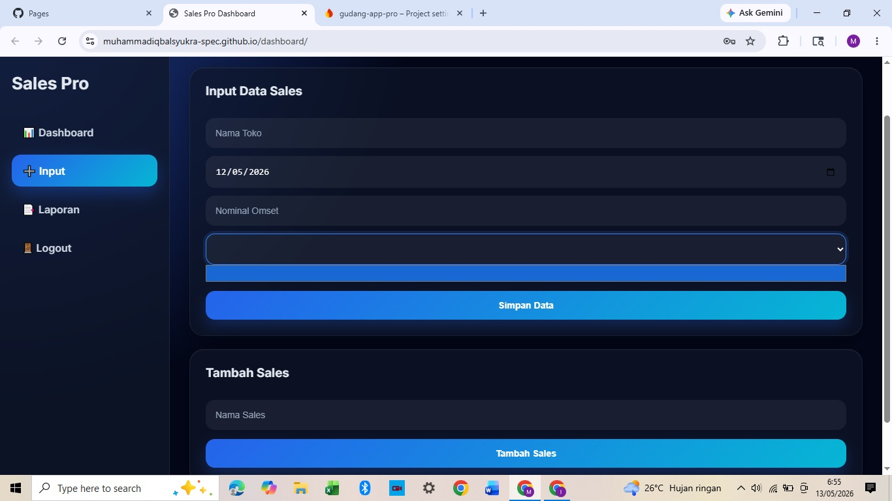
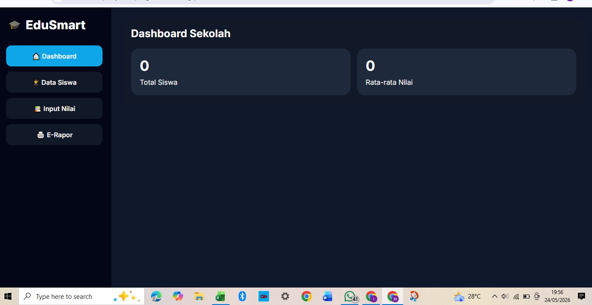
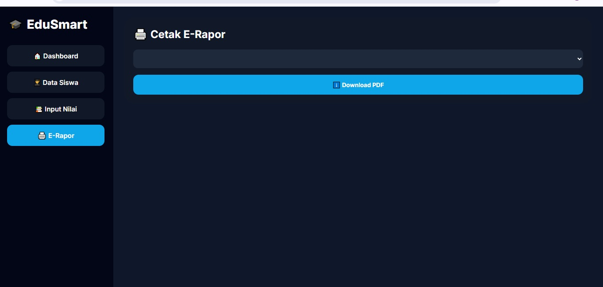

Luxury Minang Edition

Sales Professional • Tech Enthusiast • System Builder
Agam, Sumatera Barat • Indonesia
Tahun Pengalaman Sales
Kunjungan Toko
Sistem Digital Dibangun
Semangat Belajar

Dashboard monitoring omset, target, grafik penjualan, backup data, restore data dan multi-user.

Manajemen stok barang, barang masuk dan keluar, serta laporan inventory realtime.

Sistem administrasi sekolah, data siswa, input nilai, dan e-Rapor digital.
Memulai perjalanan di dunia distribusi dan pemasaran dengan fokus membangun hubungan baik dengan pelanggan.
Mengelola area penjualan, target omset, serta pengembangan jaringan toko.
Mengembangkan dashboard, sistem sekolah, dan aplikasi bisnis berbasis web.
Struktur Web Modern
UI & Responsive Design
Interaksi & Otomasi
Database Cloud
Deployment Website
Monitoring & Analisis



Memulai perjalanan sales profesional.
Mengelola area distribusi.
Membangun dashboard digital.
Membangun personal branding digital.